Guia da Xe'Sha - Habilidades, Skins e Melhores Equipes | Hero Wars Alliance
- Por: Alexandre Domingos. .
Xe'Sha não apenas consome a Vida dos aliados, ela transforma cada sacrifício em impulso. Sua magia cresce enquanto a equipe perde Vida, transformando uma formação do Caos aparentemente frágil em uma fonte implacável de pressão mágica.
Neste guia, mostrarei de onde vem esse poder: como os talismãs dela alteram cada fórmula de Ataque Mágico, quais skins, artefatos e glifos merecem seus recursos e como montar as equipes mais fortes para ela. Se você gosta de formações de alto risco que ficam mais fortes à medida que a batalha avança, Xe'Sha é uma das magas mais empolgantes para dominar.
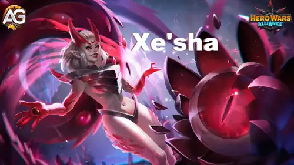

📋 Índice do Guia da Xe'Sha
- Quem é Xe'Sha?
- Avaliação Geral no Meta
- Prós e Contras
- Comparação dos Atributos Máximos dos Talismãs
- Guia de Talismãs
- Prioridade de Evolução das Habilidades
- Habilidades do Reino
- Melhores Skins
- Prioridade de Evolução dos Artefatos
- Prioridade de Evolução dos Glifos
- Como Combater Xe'Sha
- Sinergia da Xe'Sha
- Melhores Equipes para 2026
- Conclusão
Quem é Xe'Sha em Hero Wars Alliance?
Xe'Sha é uma heroína Maga e de Dano da linha do meio, pertencente ao Caminho do Caos. Sua mecânica principal é o Sacrifício: Raio Mortal e Poder Espiritual reduzem a Vida dos aliados, enquanto Poder Ascendente converte a Vida perdida por habilidades aliadas em Ataque Mágico permanente. Quanto mais tempo seus aliados alimentarem esse ciclo, mais ameaçadora ela se tornará.

- Classe Principal: Maga
- Função: Maga, Dano
- Posição: Linha do Meio
- Atributo Principal: Inteligência
- Facção: Caminho do Caos
- Como obter Pedras da Alma: Eventos e Baú Heroico
- Synergy: Kayla, Aidan, Cleaver, Dorian, Peech, Kendle
- Tier List de Hidra: S++
O que torna Xe'Sha especial é o fato de sua equipe fazer parte da fórmula de dano dela. Raio Mortal adiciona a Vida drenada dos aliados ao seu escalonamento de Ataque Mágico, Poder Espiritual recompensa os aliados do Caos com um bônus dobrado, e Névoa Carmesim ganha tempo ao fazer os ataques básicos inimigos errarem.
Prós e Contras da Xe'Sha - Hero Wars Alliance
✅ Pros
- Escalonamento permanente de Ataque Mágico por meio do Sacrifício aliado.
- Raio Mortal tem como alvo o inimigo com a menor Defesa Mágica.
- Poder Espiritual concede aos heróis do Caos o dobro do bônus de Ataque Mágico.
- Névoa Carmesim faz os ataques básicos inimigos errarem por 4 segundos.
- Classificação S++ contra Hidras mágicas.
❌ Cons
- Suas habilidades principais consomem a Vida dos aliados que estejam acima do limite de 25%.
- Ela depende muito de Sacrifício e de parceiros do Caos.
- Raio Mortal restaura a Vida sacrificada somente quando elimina o alvo.
- Névoa Carmesim tem um longo tempo de recarga de 22 segundos.
- O dano concentrado em magia é vulnerável a adversários como Rufus.
Xe'Sha - Comparação dos Atributos Máximos dos Talismãs
Estes atributos máximos já incluem o bônus de 21.300 de Penetração Mágica da Skin+ Demônios Interiores.
| Atributo | Talismã 1: Poder |
Talismã 2: Exílio |
|---|---|---|
 Inteligência Inteligência | 18,110 | 16,110 |
 Agilidade Agilidade | 3,634 | 3,634 |
 Força Força | 3,969 | 3,969 |
 Vida Vida | 602,009 | 602,009 |
 Ataque Físico Ataque Físico | 37,481 | 35,481 |
 Ataque Mágico Ataque Mágico | 147,622 | 121,822 |
 Armadura Armadura | 22,250.2 | 36,050.2 |
 Defesa Mágica Defesa Mágica | 40,551.1 | 38,551.1 |
 Penetração Mágica Penetração Mágica | 58,448 | 78,248 |
 Chance de Acerto Crítico Mágico Chance de Acerto Crítico Mágico | 4,404 | 4,404 |
 Esmagamento Esmagamento | 4,301 | 4,301 |
Como funciona o Esmagamento: Quando o alvo tem menos de 50% de Vida, os 4.301 de Esmagamento de Xe'Sha aumentam o dano físico, mágico e puro que ela causa. A fórmula da chance é (4,301 / (4,301 + Atributo Principal do alvo)) × 100%. Ele não aumenta a Vida perdida por meio de habilidades aliadas.
Como funciona a Chance de Acerto Crítico Mágico: O atributo 4.404 de Xe'Sha usa (4,404 / (4,404 + Atributo Principal do inimigo)) × 100%. Acertos críticos mágicos bem-sucedidos causam 2.5× do dano mágico normal.
Guia de Talismãs da Xe'Sha Hero Wars Alliance
Os talismãs são uma verdadeira escolha de batalha: Xe'Sha recebe apenas os bônus do talismã que equipa. Poder maximiza os números brutos de suas fórmulas de Ataque Mágico, enquanto Exílio troca parte desse escalonamento bruto por muito mais Penetração Mágica e Armadura.
1 - Talismã do Poder
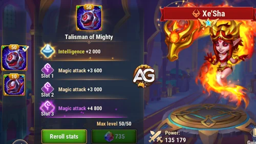
O atributo principal concede +2.000 de Inteligência. Como Inteligência é o atributo principal de Xe'Sha, esses 2.000 pontos também concedem +6.000 de Ataque Mágico, +2.000 de Defesa Mágica e +2.000 de Ataque Físico. Os três espaços de rerrolagem de Ataque Mágico acrescentam mais 19.800, portanto este talismã contribui com 25.800 de Ataque Mágico no total.
| Talismã | Total do Atributo Principal | Ganhos Derivados da Inteligência |
|---|---|---|
1 - Talismã do Poder |
Inteligência +2,000 |
Ataque Mágico +6,000 Defesa Mágica +2,000 Ataque Físico +2,000 |
| Espaço 1 | Espaço 2 | Espaço 3 | Bônus Total da Rerrolagem |
|---|---|---|---|
Ataque Mágico +6,600 |
Ataque Mágico +6,600 |
Ataque Mágico +6,600 |
Ataque Mágico +19,800 |
2 - Talismã do Exílio
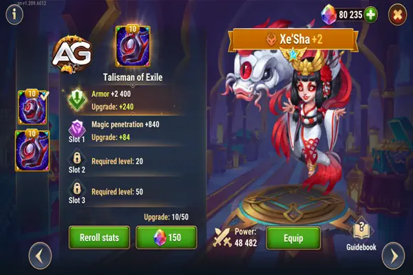
O atributo principal concede +12.000 de Armadura. Seus três espaços de rerrolagem de Penetração Mágica somam +19.800 de Penetração Mágica. Diferentemente de Poder, este talismã não aumenta diretamente as fórmulas de Ataque Mágico, mas ajuda Xe'Sha a atravessar a Defesa Mágica inimiga com seu dano mágico, ao mesmo tempo que a torna mais difícil de eliminar com ataques físicos.
| Talismã | Total do Atributo Principal |
|---|---|
2 - Talismã do Exílio |
Armadura +12,000 |
| Espaço 1 | Espaço 2 | Espaço 3 | Bônus Total da Rerrolagem |
|---|---|---|---|
Penetração Mágica +6,600 |
Penetração Mágica +6,600 |
Penetração Mágica +6,600 |
Penetração Mágica +19,800 |
Dicas do Alexandre: Recomendo o Talismã do Exílio como a escolha geral mais segura para as batalhas. Seu total de 78.248 de Penetração Mágica ajuda Xe'Sha a converter seu escalonamento em dano real, enquanto 36.050,2 de Armadura melhora sua sobrevivência. Escolha o Talismã do Poder quando o escalonamento bruto das habilidades for mais importante: em comparação com Exílio, ele aumenta em 32.250 a parcela fixa de Ataque Mágico de Raio Mortal e em 12.900 o bônus normal de Poder Espiritual.
Prioridade de Evolução das Habilidades da Xe'Sha - Hero Wars Alliance
Aprenda como cada habilidade de Xe'Sha funciona, compare os resultados exatos com os dois talismãs e siga uma ordem clara de evolução para equipes do Caos e batalhas contra Hidras.
Atualmente, Xe'Sha tem quatro habilidades padrão e não há dados de Habilidade Lendária. Para uma progressão prática, priorize Raio Mortal e Poder Ascendente, prossiga com Poder Espiritual e finalize com Névoa Carmesim. As habilidades continuam abaixo em sua ordem original.

0 - Ataque Básico
Descrição no jogo: Os ataques básicos de Xe'Sha causam dano mágico e escalam com o Ataque Mágico.
Explicação da Habilidade: Este é um golpe mágico direto equivalente a 100% do Ataque Mágico de Xe'Sha. Poder produz o maior dano bruto, enquanto Exílio abre mão de 25.800 de dano bruto em troca de mais Penetração Mágica.
Fórmula com o Talismã 1: Talismã do Poder
- Fórmula 1: Dano Mágico: 147,622 (100% Ataque Mágico)
Fórmula com o Talismã 2: Talismã do Exílio
- Fórmula 1: Dano Mágico: 121,822 (100% Ataque Mágico)
Informações da Animação da Habilidade
- Tempo de Recarga: 5.2 segundos
- Atraso da Animação: 0.48 segundos
- Tipo de Dano: Dano Mágico
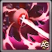
Habilidade 1 - Raio Mortal (Suprema)
Descrição no jogo: Xe'Sha drena 3% da Vida máxima de todos os aliados que estejam com mais de 25% da Vida restante e, em seguida, ataca o inimigo com a menor Defesa Mágica. O dano causado depende do dano infligido aos aliados e do Ataque Mágico de Xe'Sha. Se o alvo for eliminado como resultado, os aliados recuperam o dobro da Vida que perderam.
Explicação da Habilidade: Raio Mortal transforma a Vida disponível da equipe em dano explosivo concentrado contra o inimigo com a menor Defesa Mágica. Poder fornece 189.327,5 de Dano Mágico fixo antes da adição do sacrifício variável, enquanto Exílio fornece 157.077,5. O total final não pode ser fixado porque também adiciona 3% da Vida máxima dos aliados afetados. Uma eliminação devolve o dobro da Vida perdida, tornando decisiva a escolha do alvo.
Fórmula com o Talismã 1: Talismã do Poder
- Fórmula - Raio Mortal: Dano Mágico: 189,327.5 + 3% da Vida Máxima dos aliados afetados (125% Ataque Mágico + 4,800)
Fórmula com o Talismã 2: Talismã do Exílio
- Fórmula - Raio Mortal: Dano Mágico: 157,077.5 + 3% da Vida Máxima dos aliados afetados (125% Ataque Mágico + 4,800)
Informações da Animação da Habilidade
- Nível: 120
- Palavras-chave: Sacrifício, Não pode ser copiada
- Atraso da Animação: 1.25 segundos
- Alvo: Inimigo com a menor Defesa Mágica
- Condição de Vida: Afeta aliados que estejam atualmente acima de 25% de Vida
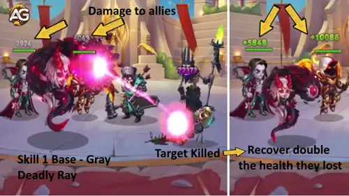
Prioridade de Evolução: Muito Alta - Evolua Raio Mortal primeiro ou junto com Poder Ascendente. É o dano explosivo concentrado de Xe'Sha, usa a Vida dos aliados como dano adicional, ataca a menor Defesa Mágica e pode devolver o sacrifício da equipe após uma eliminação.
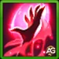
Habilidade 2 - Poder Espiritual
Descrição no jogo: Xe'Sha preenche seus aliados com poder, causando a eles dano equivalente a 3% da Vida máxima caso a Vida atual esteja acima de 25%. Os heróis fortalecidos recebem um bônus de Ataque Mágico por 4,0 segundos. O bônus é dobrado para os Heróis do Caos.
Explicação da Habilidade: Poder Espiritual é, ao mesmo tempo, um bônus para a equipe e um acionador de Sacrifício. Com Poder, concede 77.411 de Ataque Mágico, dobrado para 154.822 para os heróis do Caos. Com Exílio, concede 64.511, dobrado para 129.022 para o Caos. O custo de 3% de Vida também pode alimentar Poder Ascendente; assim, uma única conjuração fortalece a equipe e ajuda Xe'Sha a escalar.
Fórmula com o Talismã 1: Talismã do Poder
- Fórmula - Bônus de Ataque Mágico: 77,411 (50% Ataque Mágico + 3,600)
- Bônus para Herói do Caos: 154,822 (77,411 × 2)
Fórmula com o Talismã 2: Talismã do Exílio
- Fórmula - Bônus de Ataque Mágico: 64,511 (50% Ataque Mágico + 3,600)
- Bônus para Herói do Caos: 129,022 (64,511 × 2)
Informações da Animação da Habilidade
- Nível: 120
- Tempo de Recarga: 7 segundos
- Atraso da Animação: 0.3 segundos
- Duração: 4 segundos
- Palavras-chave: Sacrifício, Bônus
- Condição de Vida: Afeta aliados que estejam atualmente acima de 25% de Vida
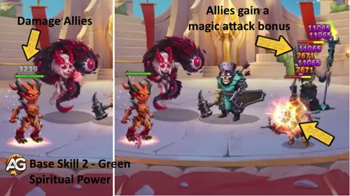
Prioridade de Evolução: Alta - Evolua-a depois de Raio Mortal e Poder Ascendente. O tempo de recarga de 7 segundos mantém o bônus da equipe ativo com frequência, os aliados do Caos recebem o dobro do valor e cada sacrifício seguro favorece o escalonamento permanente de Xe'Sha.
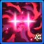
Habilidade 3 - Névoa Carmesim
Descrição no jogo: Xe'Sha cobre o campo de batalha com uma névoa por 4,0 segundos, fazendo os ataques básicos inimigos errarem. A chance de afetar um inimigo é reduzida se o nível dele for superior a 120.
Explicação da Habilidade: Névoa Carmesim não acrescenta dano diretamente; ela protege toda a equipe ao impedir que os ataques básicos inimigos acertem por 4 segundos. Essa janela defensiva é importante porque as próprias habilidades de Xe'Sha reduzem a Vida dos aliados. Nenhum dos talismãs altera sua duração ou seu efeito, portanto escolha o talismã pelo dano, penetração ou sobrevivência, não por esta habilidade.
Informações da Animação da Habilidade
- Nível: 100
- Tempo de Recarga Inicial: 4 segundos
- Tempo de Recarga: 22 segundos
- Atraso da Animação: 1 segundo
- Duração: 4 segundos
- Palavras-chave: Cegueira, Controle
- Verificação de Nível: A chance é reduzida contra inimigos acima do nível 120
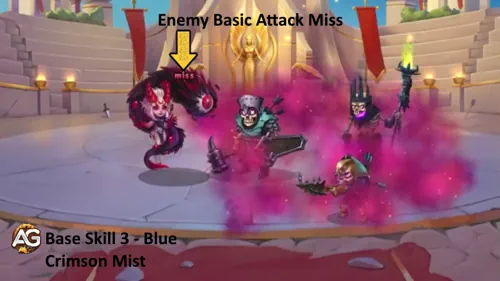
Prioridade de Evolução: Média - Evolua-a depois das três habilidades de Xe'Sha voltadas ao Sacrifício. Quatro segundos de ataques básicos errados podem salvar a equipe, mas o tempo de recarga de 22 segundos e a ausência de escalonamento direto a tornam menos urgente para a progressão de dano.
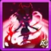
Habilidade 4 - Poder Ascendente
Descrição no jogo: Sempre que um aliado perde Vida devido a habilidades aliadas, Xe'Sha recebe um bônus permanente de Ataque Mágico equivalente a 25% da Vida perdida pelo aliado. A chance de ativar a habilidade é reduzida se o nível do aliado for superior a 120.
Explicação da Habilidade: Poder Ascendente é o motivo pelo qual Xe'Sha fica mais perigosa à medida que a luta continua. Cada perda válida de Vida de um aliado adiciona permanentemente ao Ataque Mágico dela 25% dessa Vida perdida. Não é possível calcular um exemplo fixo sem a perda real de Vida do aliado, portanto a fórmula correta permanece variável. Nenhum dos talismãs altera a taxa de 25%, mas cada novo ponto de Ataque Mágico passa a fortalecer seu ataque básico, Raio Mortal e Poder Espiritual.
- Fórmula - Ataque Mágico Permanente: 25% da Vida perdida pelo aliado
- Trigger: Um aliado perde Vida por meio de uma habilidade própria ou aliada
- Duração: Permanente até o fim da batalha
- Palavras-chave: Sacrifício, Passiva, Bônus
- Atraso da Animação: 1 segundo
- Verificação de Nível: A chance é reduzida se o aliado estiver acima do nível 120
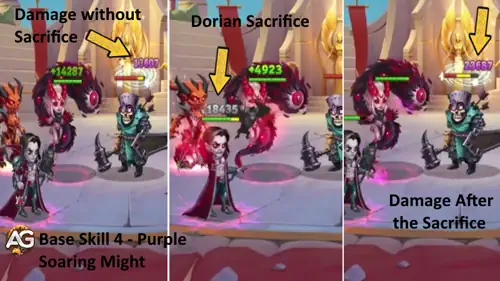
Prioridade de Evolução: Muito Alta - Evolua-a primeiro ou junto com Raio Mortal. Ela é o mecanismo de escalonamento permanente de Xe'Sha e recompensa cada Sacrifício compatível na equipe, produzindo a maior sinergia do conjunto de habilidades dela em batalhas longas.
Habilidades do Reino da Xe'Sha - Hero Wars Alliance
Xe'Sha leva seu poder do Abismo para o Reino com dois bônus ofensivos que afetam todo o exército. As porcentagens exatas estão temporariamente indisponíveis, portanto as prioridades abaixo se baseiam apenas no efeito confirmado de cada habilidade.
1ª - Grilhões Abissais
Descrição no jogo: Aumenta o ataque de todas as tropas.
Explicação da Habilidade: Grilhões Abissais é um amplo bônus ofensivo do Reino porque aumenta o Ataque de todas as tropas, em vez de apenas uma classe de tropa. A porcentagem exata não está disponível no momento, mas sua abrangência universal faz dela o primeiro investimento mais confiável.
- Nível: 5
- Efeito: Aumenta o ataque de todas as tropas.
- Porcentagem do Bônus: Temporariamente indisponível
- Tipo: Bônus ofensivo para todo o exército
- Palavras-chave: Ataque, Todas as Tropas, Bônus
Prioridade de Evolução: Muito Alta - Evolua Grilhões Abissais primeiro. Todas as tropas se beneficiam do Ataque, portanto esta habilidade melhora o exército sem exigir uma formação específica ou o resultado de um acerto crítico.
2ª - Pulso da Tristeza
Descrição no jogo: Aumenta a chance de acerto crítico de todas as tropas.
Explicação da Habilidade: Pulso da Tristeza dá a todas as tropas a chance de criar momentos ofensivos mais fortes por meio de acertos críticos. É outro benefício para todo o exército, mas seu resultado depende da ocorrência de ataques críticos, enquanto Grilhões Abissais aumenta o Ataque diretamente.
- Nível: 5
- Efeito: Aumenta a chance de acerto crítico de todas as tropas.
- Porcentagem do Bônus: Temporariamente indisponível
- Tipo: Bônus de crítico para todo o exército
- Palavras-chave: Chance de Acerto Crítico, Todas as Tropas, Bônus
Prioridade de Evolução: Alta - Evolua Pulso da Tristeza depois de Grilhões Abissais. Ela pode aumentar consideravelmente o dano do exército, mas o aumento direto de Ataque é a primeira prioridade mais consistente enquanto as porcentagens exatas de ambas permanecerem indisponíveis.
Melhores Skins para Xe'Sha Hero Wars Alliance
Descubra quais skins de Xe'Sha merecem primeiro suas Pedras de Skin, como cada bônus favorece seu conjunto de habilidades e onde se encaixam as duas poderosas melhorias de Skin+.
Todas as skins desbloqueadas fornecem seus bônus ao mesmo tempo, portanto esta é uma ordem de investimento não uma escolha de qual skin equipar. A ordem visual abaixo segue a lista de skins de Xe'Sha.
1ª Skin - Skin Padrão
Bônus de Atributo: Inteligência +1,365
Total de Pedras de Skin: 30,825
- Ataque Mágico proveniente da Inteligência: +4,095
- Defesa Mágica proveniente da Inteligência: +1,365
- Ataque Físico proveniente da Inteligência: +1,365
Prioridade de Evolução: Alta - A Inteligência melhora o Ataque Mágico por trás das habilidades de dano e dos bônus de Xe'Sha, além de acrescentar Defesa Mágica. É uma base forte e eficiente.
2ª Skin - Skin Celestial
Bônus de Atributo: Penetração Mágica +10,650
Total de Pedras de Skin: 50,410
Prioridade de Evolução: Alta - A Penetração Mágica ajuda o alto dano mágico de Xe'Sha a atingir alvos protegidos. Evolua-a depois do bônus maior da Skin+ Demônios Interiores, a menos que a Skin+ mais recente não esteja disponível.
3ª Skin - Skin+ Praiana
Bônus de Atributo: Ataque Mágico +21,300
Total de Pedras de Skin: 50,410
A versão Skin+ dobra o bônus de Ataque Mágico de uma skin normal, mantendo o mesmo custo de Pedras de Skin para evoluir.
Prioridade de Evolução: Muito Alta - Esta é a melhor skin de escalonamento bruto de Xe'Sha. O Ataque Mágico fortalece ao mesmo tempo seu ataque básico, a parcela fixa de Raio Mortal e o bônus de Poder Espiritual.
4ª Skin - Skin Cibernética
Bônus de Atributo: Armadura +10,650
Total de Pedras de Skin: 50,410
Prioridade de Evolução: Baixa - A Armadura melhora a sobrevivência contra pressão física, mas não fortalece as fórmulas ofensivas de Xe'Sha. Invista nela depois das skins de dano e penetração.
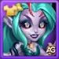
5ª Skin - Skin das Profundezas Sombrias
Bônus de Atributo: Vida +106,645
Total de Pedras de Skin: 50,410
Prioridade de Evolução: Média - Mais Vida dá a Xe'Sha tempo para acumular Ataque Mágico permanente por meio de Poder Ascendente, mas as skins ofensivas causam um impacto imediato maior.
6ª Skin - Skin Solar
Bônus de Atributo: Chance de Acerto Crítico Mágico +2,960
Total de Pedras de Skin: 50,410
Prioridade de Evolução: Alta - Acertos críticos mágicos causam 2,5 vezes o dano mágico normal. Isso dá a Xe'Sha outra forma de transformar seu Ataque Mágico crescente em dano explosivo.
7ª Skin - Skin+ Demônios Interiores
Bônus de Atributo: Penetração Mágica +21,300
Total de Pedras de Skin: 50,410
A versão Skin+ dobra o bônus de Penetração Mágica de uma skin normal, mantendo o mesmo custo de Pedras de Skin para evoluir. Esse bônus já está incluído nos dois conjuntos de atributos máximos apresentados anteriormente.
Prioridade de Evolução: Muito Alta - Este é o investimento mais forte em penetração no conjunto de skins de Xe'Sha. Priorize-a junto com a Skin+ Praiana para que seu Ataque Mágico bruto conte com penetração suficiente.
Prioridade de Evolução dos Artefatos da Xe'Sha Hero Wars Alliance
Evolua os artefatos de Xe'Sha na ordem certa para fortalecer a pressão mágica, melhorar a penetração e favorecer seu escalonamento impulsionado por Sacrifício durante a batalha.
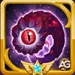
1º Artefato - Olho Espiritual (Arma)
Bônus de Atributo: Ataque Mágico +32,040
Chance de Ativação: 100%
Olho Espiritual é ativado com Raio Mortal e pode conceder seu efeito de Ataque Mágico a toda a equipe por 9 segundos. Ele reforça o próprio escalonamento de Xe'Sha enquanto cria uma poderosa janela ofensiva depois de sua habilidade suprema.
Prioridade de Evolução: Alta - Evolua-o cedo pelo grande efeito de Ataque Mágico para toda a equipe, especialmente em formações com vários heróis que causam dano mágico.

2º Artefato - Manuscrito do Vazio (Livro)
Bônus de Atributos: Penetração Mágica +10,680 | Ataque Mágico +5,340
O livro melhora os dois lados da equação de dano de Xe'Sha: o Ataque Mágico aumenta suas fórmulas, enquanto a Penetração Mágica ajuda esse dano a atravessar a proteção inimiga.
Prioridade de Evolução: Muito Alta - Evolua o livro primeiro para obter o aumento mais consistente de dano pessoal. Os dois bônus permanecem ativos em vez de dependerem da janela da habilidade suprema.

3º Artefato - Anel da Inteligência
Bônus de Atributo: Inteligência +3,990
- Ataque Mágico proveniente da Inteligência: +11,970
- Defesa Mágica proveniente da Inteligência: +3,990
- Ataque Físico proveniente da Inteligência: +3,990
Prioridade de Evolução: Média - O anel oferece um escalonamento geral valioso, mas a penetração do Livro e o efeito da Arma para a equipe geralmente trazem benefícios mais urgentes em batalha.
Prioridade de Evolução dos Glifos da Xe'Sha
Evolua os glifos de Xe'Sha com um plano claro que primeiro equilibre Ataque Mágico e penetração e, depois, acrescente a sobrevivência de que ela precisa para continuar escalando.
1º Glifo - Ataque Mágico
O Ataque Mágico fortalece diretamente o ataque básico, Raio Mortal e Poder Espiritual de Xe'Sha. É a maneira mais clara de melhorar várias partes de seu conjunto de habilidades ao mesmo tempo.
Atributos no Nível 80: +12,850 Ataque Mágico
Prioridade de Evolução: Muito Alta - Maximize este glifo primeiro ou junto com Penetração Mágica para obter o maior crescimento ofensivo imediato.
2º Glifo - Vida
A Vida ajuda Xe'Sha a permanecer ativa por tempo suficiente para acumular Ataque Mágico permanente com Poder Ascendente e usar mais habilidades.
Atributos no Nível 80: +122,800 Vida
Prioridade de Evolução: Média - Evolua-o depois dos glifos ofensivos principais, a menos que Xe'Sha esteja sendo eliminada antes de seu escalonamento começar.
3º Glifo - Defesa Mágica
A Defesa Mágica reduz a pressão das Magas inimigas e favorece lutas mais longas, mas não aumenta o dano nem o escalonamento de Sacrifício de Xe'Sha.
Atributos no Nível 80: +12,850 Defesa Mágica
Prioridade de Evolução: Média - Evolua-o quando o dano explosivo mágico for a principal ameaça; caso contrário, mantenha dano e penetração à frente.
4º Glifo - Penetração Mágica
A Penetração Mágica converte os grandes valores brutos de Ataque Mágico de Xe'Sha em dano mais confiável contra inimigos com uma Defesa Mágica elevada.
Atributos no Nível 80: +12,850 Penetração Mágica
Prioridade de Evolução: Muito Alta - Embora apareça em quarto lugar na lista do jogo, este é um dos primeiros glifos que devem ser maximizados para causar dano confiável.
5º Glifo - Inteligência
Inteligência é o atributo principal de Xe'Sha e melhora ao mesmo tempo o ataque e a resistência mágica.
Atributos no Nível 80: +2,110 Inteligência
- Ataque Mágico proveniente da Inteligência: +6,330
- Defesa Mágica proveniente da Inteligência: +2,110
- Ataque Físico proveniente da Inteligência: +2,110
Prioridade de Evolução: Alta - Evolua-o depois dos glifos diretos de Ataque Mágico e Penetração Mágica. Seus três ganhos derivados fazem dele um investimento geral eficiente.
Como Combater Xe'Sha em Hero Wars Alliance
Xe'Sha se torna perigosa quando o Sacrifício aumenta seu Ataque Mágico, mas estes três adversários exploram exatamente as fraquezas registradas em seu perfil de batalha.
Cornelius

Se Xe'Sha tiver a Inteligência mais alta, Cornelius pode torná-la alvo de sua habilidade suprema e causar um grande dano físico. Seu escudo também aumenta a Defesa Mágica dos aliados, reduzindo a pressão criada pelos ataques mágicos de Xe'Sha.

Se Xe'Sha tiver o Ataque Mágico mais alto, Laços Sombrios se conecta a ela e transfere para Phobos a Energia que ela obtém durante 10 segundos. Esse atraso impede que ela alcance Raio Mortal quando a equipe precisa de seu dano explosivo e da possível restituição de Vida.
Rufus

Rufus é efetivamente imortal contra dano mágico, e a Barreira de Rakashi absorve o dano mágico recebido por seus aliados. Xe'Sha pode acumular um Ataque Mágico enorme e, ainda assim, não conseguir eliminar alvos protegidos por esse escudo.
Sinergia da Xe'Sha em Hero Wars Alliance
Os parceiros mais fortes de Xe'Sha são os heróis identificados em sua lista de sinergias e nas composições de equipe recorrentes. Cada um ajuda a inserir essa causadora de dano centrada em Sacrifício em uma formação funcional.

Aidan aparece na equipe recomendada de Xe'Sha para 2026 e em sete formações comuns. Essa presença recorrente faz dele um dos parceiros mais evidentes para manter unido o núcleo focado em Sacrifício.

Cleaver ocupa a última posição da equipe recomendada de Xe'Sha e aparece em seis formações comuns. Sua presença fornece uma linha de frente estável à composição enquanto Xe'Sha acumula Ataque Mágico permanente na linha do meio.

Dorian é o parceiro que mais se repete nas equipes comuns listadas, aparecendo oito vezes. Essa constância faz dele uma escolha central ao montar uma composição em torno da arriscada troca de Vida aliada por poder ofensivo realizada por Xe'Sha.

Kayla aparece em cinco das equipes comuns listadas com Xe'Sha. Ela faz parte da versão agressiva do núcleo, na qual o escalonamento de Ataque Mágico de Xe'Sha é combinado com outra fonte de pressão.

Kendle está incluída tanto na lista das melhores sinergias de Xe'Sha quanto na equipe recomendada para 2026. Juntas, elas formam a dupla central de dano dessa formação, enquanto as mecânicas de Vida aliada de Xe'Sha mantêm ativo o próprio escalonamento.

Peech aparece em duas equipes comuns e continua sendo uma das parceiras de sinergia explicitamente listadas para Xe'Sha. Ela oferece uma alternativa quando o jogador quer se afastar da formação recomendada com Kendle sem abandonar o núcleo estabelecido.
Melhor Equipe para Xe'Sha em 2026 - Hero Wars: Alliance
Análise da Equipe nº 1
Esta formação reúne quatro parceiros da lista de sinergias de Xe'Sha: Aidan, Kendle, Dorian e Cleaver. Xe'Sha usa o Talismã do Exílio para obter 78.248 de Penetração Mágica e uma proteção física maior, o que permite que ela continue escalando enquanto a formação mantém sua pressão centrada em Sacrifício.
A equipe foi montada para dar a Xe'Sha oportunidades repetidas de obter Ataque Mágico permanente e alcançar Raio Mortal. Kendle forma a segunda ameaça de dano, Dorian e Aidan reforçam o núcleo, e Cleaver sustenta a linha de frente.
| Xe'Sha - Melhor Equipe de 2026 nº 1 | ||||
|---|---|---|---|---|
Equipes Mais Populares para Xe'Sha em Hero Wars Alliance
- Lilith, Aidan, Dorian, Xe'Sha, Astaroth
- Aidan, Dorian, Xe'Sha, Jorgen, Astaroth
- Lilith, Aidan, Xe'Sha, Kayla, Astaroth
- Aidan, Xe'Sha, Judge, Kayla, Hatchet
- Aidan, Xe'Sha, Nebula, Kayla, Cleaver
- Aidan, Dorian, Xe'Sha, Kayla, Cleaver
- Aidan, Peech, Xe'Sha, Kayla, Cleaver
- Lilith, Dorian, Xe'Sha, Jorgen, Astaroth
- Lilith, Peech, Dorian, Xe'Sha, Cleaver
- Lilith, Dorian, Xe'Sha, Jorgen, Cleaver
- Lilith, Dorian, Xe'Sha, Astaroth, Cleaver
- Dorian, Lars, Xe'Sha, Krista, Astaroth
Conclusão - Guia da Xe'Sha (Hero Wars Alliance)
Xe'Sha é uma Maga de alto potencial para jogadores que entendem que a Vida dos aliados é um recurso, não apenas algo a ser protegido. Raio Mortal converte esse recurso em dano explosivo mágico concentrado, Poder Espiritual recompensa sua equipe com uma curta janela ofensiva, Névoa Carmesim ganha tempo, e Poder Ascendente transforma cada sacrifício compatível em crescimento permanente.
Priorize a Skin+ Praiana e a Skin+ Demônios Interiores, desenvolva primeiro Ataque Mágico e Penetração Mágica e evolua cedo o Manuscrito do Vazio. O Talismã do Exílio é minha recomendação geral por sua penetração e Armadura, enquanto o Talismã do Poder continua sendo a melhor opção para fórmulas brutas. Acima de tudo, cerque Xe'Sha dos parceiros de sinergia já comprovados nas equipes listadas.
⭐ Veredito Final do Alexandre: Xe'Sha é um excelente investimento para um elenco desenvolvido de Sacrifício ou do Caminho do Caos e uma opção S++ contra Hidras mágicas. Ela é muito menos autossuficiente fora dessas formações, mas, com os parceiros certos, seu escalonamento permanente de Ataque Mágico pode decidir batalhas que inicialmente parecem impossíveis.
Sugestão de vídeo

▶ Assista a este vídeo no YouTube